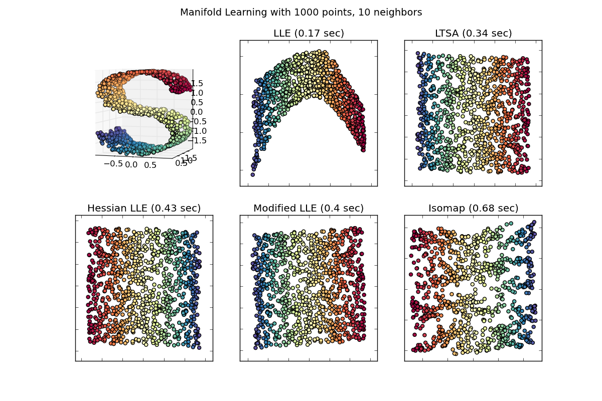

Comparison of Manifold Learning methods¶
An illustration of dimensionality reduction on the S-curve dataset with various manifold learning methods.
For a discussion and comparison of these algorithms, see the manifold module page
Python source code: plot_compare_methods.py
# Author: Jake Vanderplas -- <vanderplas@astro.washington.edu>
print __doc__
from time import time
import pylab as pl
from mpl_toolkits.mplot3d import Axes3D
from matplotlib.ticker import NullFormatter
from sklearn import manifold, datasets
n_points = 1000
X, color = datasets.samples_generator.make_s_curve(n_points)
n_neighbors = 10
out_dim = 2
fig = pl.figure(figsize=(12, 8))
pl.suptitle("Manifold Learning with %i points, %i neighbors"
% (1000, n_neighbors), fontsize=14)
try:
# compatibility matplotlib < 1.0
ax = fig.add_subplot(231, projection='3d')
ax.scatter(X[:, 0], X[:, 1], X[:, 2], c=color, cmap=pl.cm.Spectral)
ax.view_init(4, -72)
except:
ax = fig.add_subplot(231, projection='3d')
pl.scatter(X[:, 0], X[:, 2], c=color, cmap=pl.cm.Spectral)
methods = ['standard', 'ltsa', 'hessian', 'modified']
labels = ['LLE', 'LTSA', 'Hessian LLE', 'Modified LLE']
for i, method in enumerate(methods):
t0 = time()
Y = manifold.LocallyLinearEmbedding(n_neighbors, out_dim,
eigen_solver='auto',
method=method).fit_transform(X)
t1 = time()
print "%s: %.2g sec" % (methods[i], t1 - t0)
ax = fig.add_subplot(232 + i)
pl.scatter(Y[:, 0], Y[:, 1], c=color, cmap=pl.cm.Spectral)
pl.title("%s (%.2g sec)" % (labels[i], t1 - t0))
ax.xaxis.set_major_formatter(NullFormatter())
ax.yaxis.set_major_formatter(NullFormatter())
pl.axis('tight')
t0 = time()
Y = manifold.Isomap(n_neighbors, out_dim).fit_transform(X)
t1 = time()
print "Isomap: %.2g sec" % (t1 - t0)
ax = fig.add_subplot(236)
pl.scatter(Y[:, 0], Y[:, 1], c=color, cmap=pl.cm.Spectral)
pl.title("Isomap (%.2g sec)" % (t1 - t0))
ax.xaxis.set_major_formatter(NullFormatter())
ax.yaxis.set_major_formatter(NullFormatter())
pl.axis('tight')
pl.show()